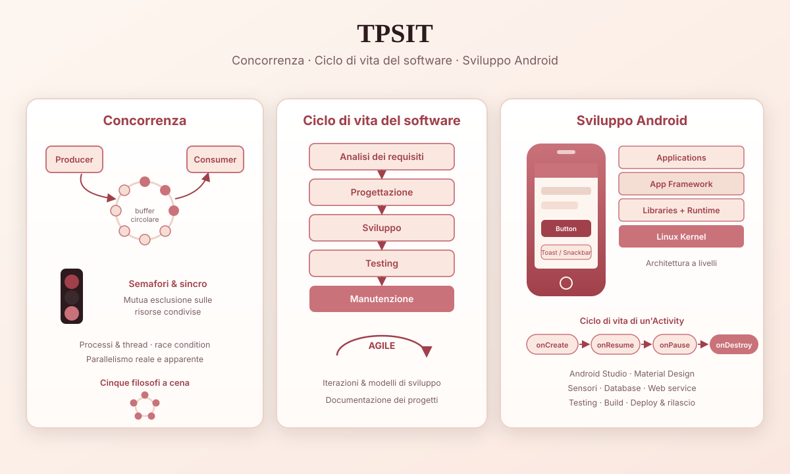

Area scientifico-tecnica
TPSIT
Tecnologie e Progettazione di Sistemi Informatici e di Telecomunicazione
TPSIT mi ha permesso di approfondire il funzionamento dei sistemi concorrenti e delle applicazioni distribuite. Durante l’anno abbiamo studiato come più processi possono collaborare tra loro e come vengono gestite le risorse condivise all’interno di un sistema.
Una parte molto interessante è stata lo sviluppo di applicazioni Android, che ci ha fatto avvicinare al mondo mobile attraverso Android Studio e alla progettazione di interfacce moderne e dinamiche.

Concorrenza e Parallelismo
La concorrenza e il parallelismo sono due concetti fondamentali dell'informatica che permettono di eseguire più attività contemporaneamente o apparentemente contemporaneamente, migliorando l'efficienza dei sistemi.
Concorrenza
La concorrenza si verifica quando più processi o thread avanzano nello stesso intervallo di tempo, condividendo le risorse del processore.
In un sistema con un solo processore, il sistema operativo alterna rapidamente l'esecuzione dei vari processi tramite il time sharing, dando l'impressione che vengano eseguiti contemporaneamente.
Esempio. Mentre ascolti musica sul computer:
- il lettore musicale riproduce l'audio;
- il browser carica una pagina web;
- un programma scarica un file.
Le attività non vengono necessariamente eseguite nello stesso istante, ma il processore passa velocemente dall'una all'altra.
Problemi della concorrenza. Quando più processi accedono alle stesse risorse possono verificarsi:
- Race condition (condizioni di competizione);
- inconsistenza dei dati;
- conflitti nell'accesso alle risorse condivise.
Per evitarli si utilizzano meccanismi di sincronizzazione come:
- mutex;
- semafori;
- monitor.
Parallelismo
Il parallelismo consiste nell'esecuzione reale di più attività nello stesso momento.
Avviene quando il sistema dispone di:
- più processori;
- più core all'interno della CPU.
Ogni core può eseguire un compito diverso contemporaneamente agli altri.
Esempio. Un computer con processore quad-core può:
- elaborare un video;
- eseguire un antivirus;
- riprodurre musica;
- navigare sul web;
tutte queste attività realmente nello stesso istante.
Differenza tra Concorrenza e Parallelismo
| Concorrenza | Parallelismo |
|---|---|
| Più attività avanzano nello stesso periodo di tempo | Più attività vengono eseguite nello stesso momento |
| Può esistere anche con una sola CPU | Richiede più core o processori |
| Basata sull'alternanza dei processi | Basata sull'esecuzione simultanea |
| Migliora la gestione delle risorse | Migliora le prestazioni e la velocità |
Processi e Thread
Per realizzare concorrenza e parallelismo si utilizzano:
Processo — È un programma in esecuzione con memoria e risorse proprie.
Thread — È un'unità di esecuzione interna a un processo.
Un processo può contenere più thread che lavorano contemporaneamente e condividono la stessa memoria.
Applicazioni
Concorrenza e parallelismo sono utilizzati in:
- sistemi operativi;
- server web;
- videogiochi;
- elaborazione di immagini e video;
- applicazioni distribuite;
- intelligenza artificiale;
- cloud computing.
In sintesi
La concorrenza permette a più attività di progredire contemporaneamente attraverso l'alternanza dell'esecuzione, mentre il parallelismo consente l'esecuzione reale simultanea di più attività grazie alla presenza di più core o processori. Entrambi sono fondamentali per migliorare l'efficienza, la reattività e le prestazioni dei moderni sistemi informatici.